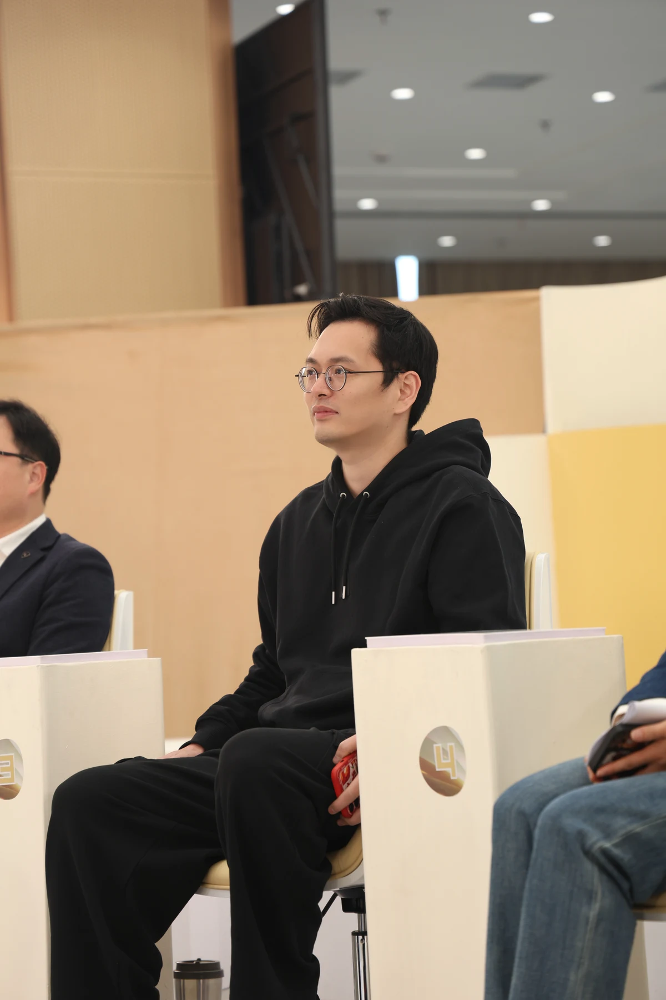
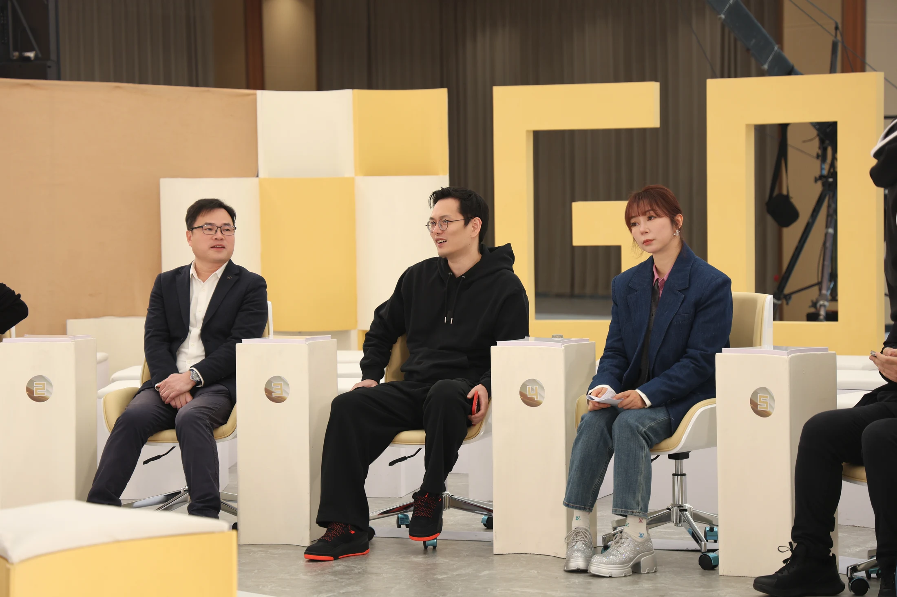
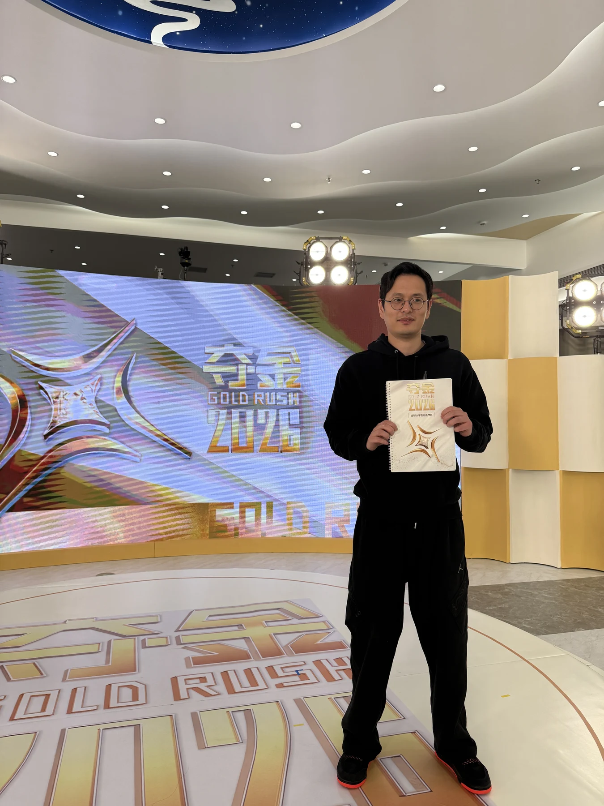

先判断
先决定什么值得做，再决定用什么模型。方向是支点，AI 只是杠杆。
YANRU / AI COMMERCIALIZATION / 2026
颜汝，智焰科技 CEO。帮助个人、老板和企业，把脑子里的判断、业务里的流程、团队里的经验，变成 AI 会用、团队能复制、业务能复利的系统。
工具会变，判断不会过时。
真正厉害的公司，不是每个人都很聪明，而是普通人也能借助系统，持续做出稳定结果。
先决定什么值得做，再决定用什么模型。方向是支点，AI 只是杠杆。
把案例、话术、文章和复盘，变成 AI 能理解的知识资产。
每跑一次流程，都留下更好的标准。系统应该越用越懂你的业务。
THE OPERATING SYSTEM
JUDGMENT / KNOWLEDGE / FLOW颜汝的四步方法
正在处理：判断
四个入口，同一套底层能力
两天把一个真实任务做出来，从“听懂”走到“带走结果”。
把 AI 接进内容、销售、客服、管理和知识库，不做工具演示。
建立选题、素材、脚本、发布与复盘系统，让内容持续为业务工作。
把老板经验封装成团队可以重复调用的工作流，减少返工和传话。
从课程产品到企业 AI 落地



THE NEXT MOVE
从你公司最常见的 20 个问题开始，
把经验变成 AI 能调用的标准答案。